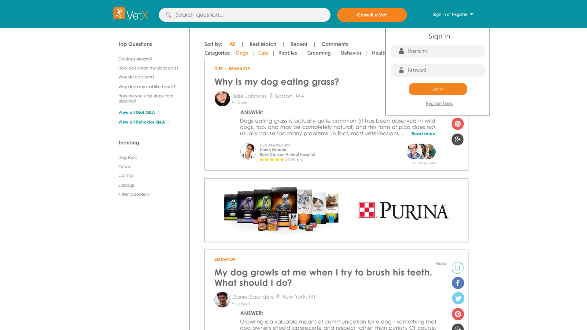

Here is a slight variation on the site. The differing areas are highlighted.
Consult a Vet
Ask Question
For the "Ask Question" form you could also have it appear like this:
Or like this:
Once sent, the question appears like this:
Sign In or Register
To log in the user would click on "Sign In or Register" and log in. Those without an account would do the same and then click "Register Here." upon which a form would appear much like the first "Ask Question" form above.

Question + Answer
For the "Question + Answer" page I have three ideas. One is to simply have it on it's own separate page like so:
Another would be to have the question expand when the user click "Read More" like the second "Ask Question" form above, and a third is to have it appear as an overlay, again, when the user clicks "Read More".